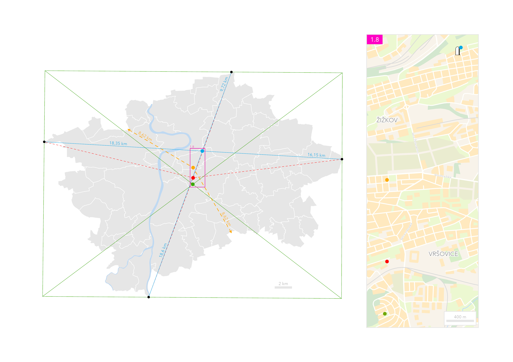

Určit střed nepravidelného území, jakým je Praha, není jednoznačná úloha. Výsledek závisí na zvolené metodě i na tom, kterou vlastnost města chceme popsat. Atlas proto pracuje se čtyřmi různými středy: se středem diagonál opsaného obdélníku u ulice Na Bohdalci, s geometrickým středem neboli těžištěm území v blízkosti nákupního centra Eden, s bodem nejvzdálenějším od hranice Prahy u náměstí Jiřího z Lobkovic a s průsečíkem spojnic krajních bodů na dětském hřišti Na Balkáně. Právě poslední z nich je od roku 2020 v terénu označen betonovým sloupkem, který však stojí přibližně 30 metrů od matematicky určené polohy. Žádný z těchto bodů není správnější než ostatní, každý ukazuje jiný aspekt rozlehlosti a tvaru Prahy.

| Středy (1.8) | severní šířka | východní délka |
|---|---|---|
| Střed diagonál opsaného obdélníku | 50°03′35.8956″ | 14°27′56.2248″ |
| Geometrický střed | 50°04′00.4404″ | 14°27′57.4740″ |
| Nejvzdálenější bod od hranice | 50°04′38.7012″ | 14°27′57.1032″ |
| Průsečík okrajových bodů | 50°05′41.1432″ | 14°28′50.2248″ |
| Betonový sloupek | 50°05′40.2368″ | 14°28′50.2813″ |


{kind=link}